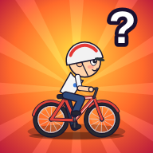

プライバシーポリシー・利用規約
なにが目的なん？ ONLINE（以下「本ゲーム」）プライバシーポリシー
本ゲームの運営（以下「運営」）は、プレイヤーの情報を次のとおり取り扱います。
1. 集める情報
| 情報 | 内容 | 保存場所 |
|---|---|---|
| ゲームの記録 | コイン（NC）、持ち物、レベル、クエストの進み具合など | プレイヤーの端末（ブラウザ）。不正チェックのため、コインの数などの一部をサーバーにも記録します |
| ユーザー名・プロフィール | ユーザー名、アイコン、ひとこと、成績（勝利数・ランクなど） | サーバー（ほかのプレイヤーにも表示されます） |
| 対戦・ランキングの記録 | スコア、ランク（RP）、記録を出したコース | サーバー |
| フレンド | フレンド申請・承認の記録 | サーバーと端末 |
| 通報・フィードバック | 送られた内容と日時 | サーバー（運営だけが見られます） |
| 端末の情報 | 機種名、OS、ブラウザの種類、画面の大きさ、言語、タイムゾーン、最後に接続した日時 | サーバー（運営だけが見られます） |
| 通知の登録情報 | 通知をオンにした人だけ：通知を届けるための宛先（ブラウザが作るもの）と、受け取る通知の種類 | サーバー（通知を送るためだけに使います） |
| エラーの情報 | ゲームの画面で起きたエラーの内容・場所・端末の種類 | サーバー（運営だけが見られます。不具合を直すために使います） |
| 利用状況の集計 | その日に遊びに来た人数・新しく始めた人数・混む時間帯・試合の数、ガチャやショップで手に入ったアイテムの回数（だれが手に入れたかは記録しません） | サーバー（運営だけが見られます。ゲームをよくするために使います） |
| おおまかな地域（都道府県） | 接続したときのIPアドレスから調べた都道府県（IPアドレスは外部サービス ipapi.co／ipwho.is に送って調べますが、こちらでは保存しません） | サーバー（どの地域で遊ばれているかの集計だけに使います） |
| ブラウザの合い言葉（クッキー） | このブラウザを見分けるためのランダムな文字（1つだけ・広告などには使いません） | ブラウザとサーバー（ブラウザの記録が消えたときに、前のデータを見つけて元に戻すため） |
| 引き継ぎコードの控え | ゲームの記録（持ち物・コインなど）を引き継ぐためのコード。端末から自動で送られる最新のもの | サーバー（運営だけが見られます。端末をなくしたときなどのサポートに使います） |
| 回線の識別子 | 接続元のIPアドレスから作った短い記号（IPアドレスそのものは保存しません） | サーバー（運営だけが見られます） |
チャットの内容はサーバーに保存しません（相手に届けるだけです）。ただし、通報されたときは、通報した人が書いた内容が保存されます。
本ゲームは広告や、外部の行動追跡ツール（他社のアクセス解析など）を使っていません。利用状況は、ゲームのサーバーの中で人数などの集計として記録するだけです。
2. 使う目的
- ゲームを遊べるようにするため（対戦、ランキング、フレンド、プロフィールの表示など）
- 暴言・不正・なりすましなどの迷惑行為を見つけて、警告や利用停止をするため
- 同じ人が複数のアカウントで不正をしていないか確認するため（端末の情報・回線の識別子）
- お問い合わせやフィードバックに対応し、ゲームをよくするため（エラーの情報・試合の決着のしかたの集計を含みます）
- 通知をオンにした人に、お知らせ・イベント・フレンド申請などを届けるため（≡ メニューからいつでもオフにできます）
3. ほかの人やサービスに渡すこと
法令にもとづく場合をのぞき、集めた情報を運営以外の第三者に渡したり売ったりしません。ゲームを動かすために、次のサービスを使っています。
- Render（ゲームのサーバー）
- Upstash（データの保存。設定している場合）
- Google Fonts（文字の表示）
4. 情報の削除
プロフィールや記録の削除を希望する場合は、ゲーム内の「💡 フィードバック」から「その他」を選んで、ユーザー名と一緒にお知らせください。端末に保存されている記録は、ブラウザのデータを消すと削除されます（引き継ぎコードがないと元に戻せません）。
5. 13歳未満のプレイヤー
13歳未満の方は、保護者の方と一緒にこのページを読み、同意してもらってから遊んでください。自分の本名・住所・学校名・電話番号・SNSのIDなどを、ユーザー名やチャットに書かないでください（チャットでは自動で＊に置きかわります）。
利用規約
本ゲームを遊ぶ前に読んでください。遊んだ時点で、この規約に同意したものとします。
1. やってはいけないこと
- 暴言、悪口、差別的な言葉、いやがらせ、性的な言葉
- ゲームの記録や通信の書き換え、チートツールの使用、バグを悪用すること
- ほかのプレイヤーや運営のふりをすること
- 自分や他人の個人情報を書きこむこと
- わざと試合を放置するなど、ほかのプレイヤーの楽しみをじゃますること
- サーバーに負担をかける行為、そのほか運営が不適切だと判断すること
2. 違反したとき
運営は、予告なく、警告・コインや持ち物の修正・一定期間または無期限の利用停止を行うことがあります。
3. ゲームの内容とデータ
- ゲームの内容は、予告なく変更・メンテナンス・終了することがあります。
- コイン（NC）や持ち物はゲーム内だけのもので、お金にかえることはできません。
- 端末の故障やブラウザのデータ削除などで記録が消えても、運営は元に戻せません。引き継ぎコードをメモしておいてください。
- 本ゲームを遊んだことで起きた損害について、運営は責任を負いません（運営に故意または重大な過失がある場合をのぞきます）。
4. 規約の変更
このページの内容は変更することがあります。大切な変更は、ゲーム内の「📢 お知らせ」でお伝えします。
お問い合わせ
ゲーム内の ≡ メニュー → 「💡 ご意見・フィードバックを送る」 から送ってください。不具合の報告、情報の削除の依頼、そのほかのご質問もこちらで受け付けています。
制定日：2026年11月7日（通知・エラー情報について追記）
← ゲームに戻る